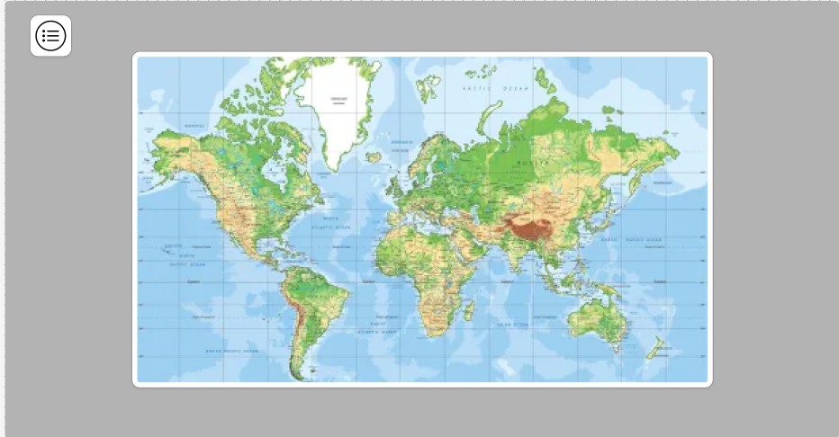
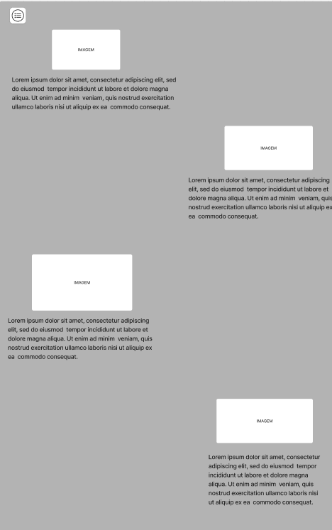
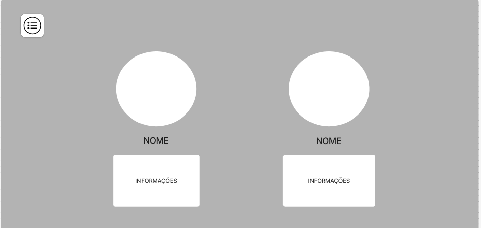
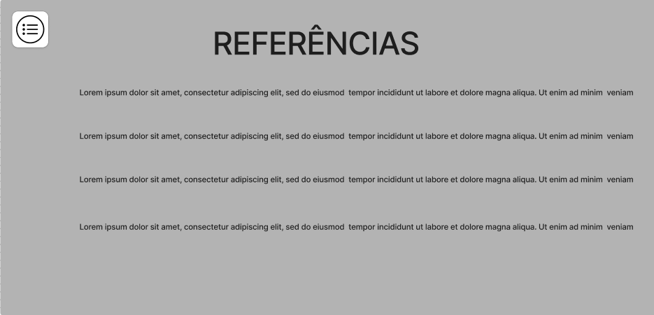

Guia turístico da cidade de Toledo, onde irá conter os principais pontos da cidade.
Público-Alvo
Pessoas que se interessam em visitar Toledo, ou descobrir novos estabelecimentos na cidade.
Estrutura do site
Estrutura do site: Página inicial com uma menu lateral contendo as seguintes categorias:
*Pesquisa: Essa página seria uma ferramenta de busca que o usuário poderia procurar por pontos na cidade. Na
mesma página em baixo teria recomendações dos estabelecimentos melhor avaliados e mais visitados.
*Mapa: mapa completo do município de Toledo.
*Cultua: Página informativa voltada para a cultura de Toledo.
*Sobre nós: página com informações sobre os desenvolvedores do site.
*Referências: Fontes e imagem utilizados no desenvolvimento do site.
No canto superior direito haverá uma botão para entrar ou criar uma conta.
Na parte inferior direita irá conter uma opção de configurações, que permitirá que o usuário troque o tema
do site.
Exemplo de Estrutura do Site
Nosso site sobre Educação no Trânsito será organizado em 4 seções principais:
Seção 1: Legislação
Sinalização de trânsito
Direitos e deveres do pedestre
Multas mais comuns
Seção 2: Prevenção de Acidentes
Uso correto do cinto de segurança
Perigos do celular ao volante
Direção defensiva
Seção 3: Dados Estatísticos
Acidentes na região
Comparativo histórico
Gráficos interativos
Seção 4: Interatividade
Quiz de conhecimentos
Simulador de multas
Mapa de rotas seguras
Por Que Essa Estrutura?
Essa organização permite:
Abordar o tema de forma progressiva (do teórico ao prático)
Engajar diferentes perfis de usuários (visual, cinestésico, etc)
Integrar os eixos tecnológicos do curso (interatividade com JS)
2. Wireframes
Inclua aqui os wireframes do seu site como figuras,
como nos exemplos abaixo.
Você pode aprender mais sobre os wireframes na internet ou
por meio desta página,
criada com o auxílio do Deep Seek.
Página Inicial Página Pesquisa

Página Mapa

Página Cultura (tem scroll)

Página Sobre Nós

Página Referências